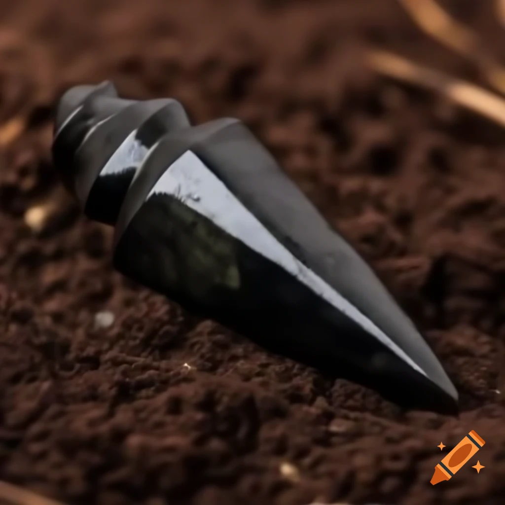
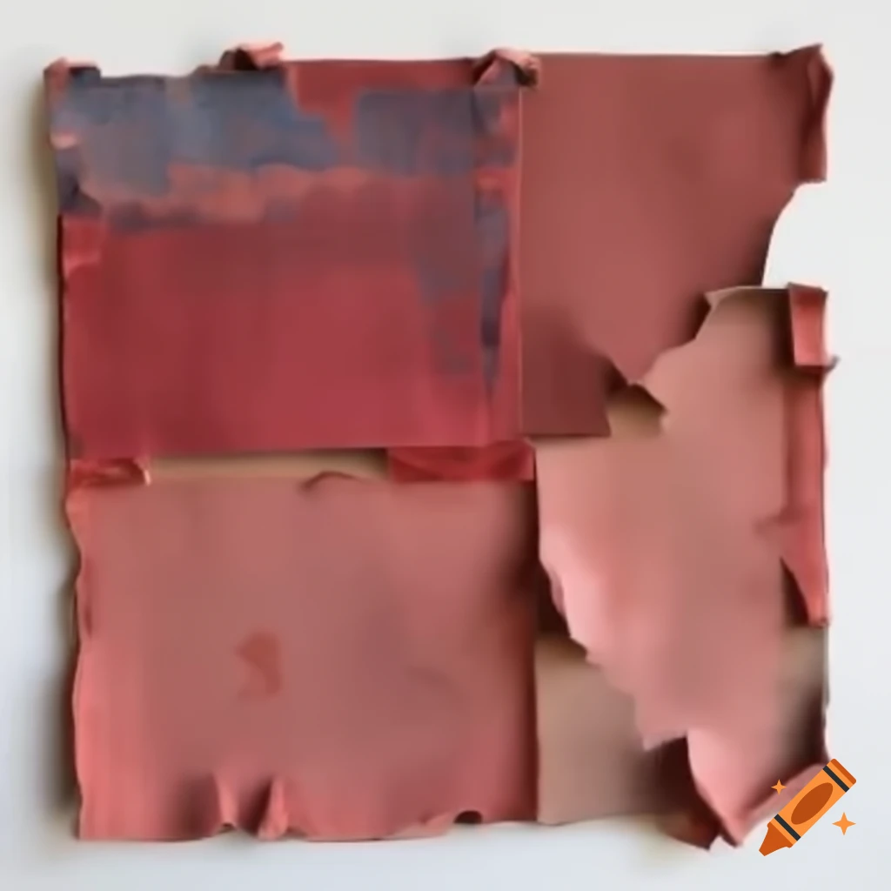
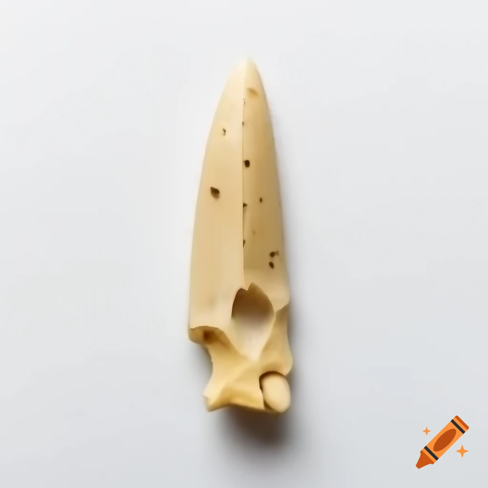

The content in this gallery was entirely created by AI under human direction. It was then curated, reviewed and edited by a human before being published.
Click on any artifact image below to view detailed interpretations and analysis.
Archaeology
Stone Arch Fragment
Name:
Stone Arch Fragment
Material:
Sandstone with carved relief
Size/Weight/Shape:
Approx 62 cm tall, 48 cm wide, curved arch piece; irregular heavy block
Estimated Age:
Inferred mid-1st millennium CE from associated ceramics
Preservation State:
Partial, weathered edges, surface erosion
Location Found:
Grotto A-3 excavation trench, coordinates recorded in field book
Likely Purpose:
Architectural element, doorway or ceremonial arch
Evidence of Use:
Smooth worn step marks on inner curve, soot staining on lower face
Manufacture Clues:
Chisel tool marks, shallow drill pockmarks for ornament anchors
Found With:
Broken column base fragments and small painted tiles
Burial or Habitat Context:
Collapsed room fill in multi-phase building collapse
Symbolism:
Carved spiral motif possibly tied to local civic identity
Comparison:
Resembles arch fragments from Site B but larger and more ornate
Use and Function:
Framing entryways and marking important thresholds

Obsidian Spearhead
Name:
Obsidian Spearhead
Material:
Volcanic glass (obsidian)
Size/Weight/Shape:
18 cm long, leaf-shaped, about 230 g
Estimated Age:
~12,000 years (Late Paleolithic, inferred by organic context)
Polish on occipital region likely from burial wrappings
Manufacture Clues:
Not applicable; human bone shows cut marks consistent with excarnation practices
Found With:
Beads, textile fragments, and a small copper pin
Burial or Habitat Context:
Interred in shallow chamber with grave goods
Symbolism:
Bead arrangement suggests status or identity marker
Comparison:
Similar bead patterns found in Tombs H2 and H5
Use and Function:
Human remains used for study and respectful display

Woven Textile Fragment
Name:
Woven Textile Fragment, Red and Indigo
Material:
Plant fiber warp and wool weft
Size/Weight/Shape:
Approx 18 x 12 cm, rectangular fragment, thin and flexible
Estimated Age:
Inferred late medieval period from dye analysis context
Preservation State:
Partial, faded dyes, some missing threads
Location Found:
Storage pit fill next to hut foundation, Sector 4
Likely Purpose:
Clothing trim or small wrap
Evidence of Use:
Wear along edge and minor staining consistent with daily use
Manufacture Clues:
Plain weave with supplementary weft patterning and hand-spun yarn
Found With:
Bone needles and small loom weight fragment
Burial or Habitat Context:
Discarded in domestic waste pit
Symbolism:
Red stripe motif may indicate household or clan mark
Comparison:
Matches fragments from nearby rural households
Use and Function:
Clothing or decorative textile fragment

Bone Awl
Name:
Bone Awl with Hafting Marks
Material:
Long bone (mammal), polished
Size/Weight/Shape:
12 cm long, tapered point, light weight
Estimated Age:
Context suggests Iron Age usage, estimated by layer pottery
Preservation State:
Complete, tip slightly blunted, surface polished
Location Found:
Workshop locus inside dwelling F, near tanning tools
Likely Purpose:
Sewing or perforating leather/textiles
Evidence of Use:
Polish wear on shaft and organic residue near hafting point
Manufacture Clues:
Cut marks from stone tool shaping and fine smoothing grooves
Found With:
Leather scraps, bone needles, and small scraper
Burial or Habitat Context:
Domestic workshop, on wooden workbench surface
Symbolism:
Plain functional object, no obvious symbolic marks
Comparison:
Similar to awls cataloged from rural settlements in same region
Use and Function:
Tool for crafts, leatherworking, and textile production
Histories
Detailed interpretive essays and contextual analysis for our collection items.
Stone Arch Fragment — Archaeological Context
Material: Sandstone with carved relief | Function: Architectural element, doorway or ceremonial arch | Location Found: Collapsed room fill, multi-phase building collapse
This sandstone fragment comes from a doorway or ceremonial arch in a multi-phase building uncovered in Grotto A-3. Its curved form and weathered edges suggest prolonged exposure and use. Step wear and soot staining along the lower face indicate repeated foot traffic or proximity to fire, highlighting its functional and possibly ritual use.
Spiral motifs carved in relief reflect civic or communal symbolism, linking this fragment to local identity. The craftsmanship, evident in chisel and shallow drill marks, demonstrates careful construction techniques consistent with sophisticated desert urban architectural practices. Nearby column bases and painted tile fragments point to a ceremonial or communal function, perhaps in a civic hall or gathering space.
Comparative Analysis: This fragment shows similarities with larger, more ornate arches at Site B, suggesting shared stylistic traditions across the region, yet with local adaptations. The spiral motifs appear to be unique to this location, possibly indicating site-specific civic identity markers.
Interpretive Context: Drone photography and LIDAR surveys of the surrounding site confirm stratigraphic layers indicating multiple building phases and episodes of collapse. These analyses help reconstruct the original placement of the arch within the larger urban environment. The fragment likely marked an important threshold between public and private spaces, or between secular and sacred areas.
Cautionary Note: While physical context and comparative architecture suggest ceremonial or communal significance, the full symbolic meaning cannot be determined with certainty. The interpretation remains provisional pending further excavation and analysis of surrounding structures.
On Display Courtesy of: Dr. Cassia Varek and the Royal Explorers Fellowship Archaeological Survey
Obsidian Spearhead — Ritual and Function
Material: Obsidian (volcanic glass) | Function: Hunting weapon, possible ritual use | Location Found: Tip-down in ash pit with charred bird bones
This finely crafted obsidian spearhead was recovered from a midden in Grotto A-7, situated in the high-altitude Vaktari Highlands. Its intact edges and slight tip chip indicate careful use, while blood and feather traces along the haft suggest repeated hunting activity. The discovery context, buried tip-down in an ash pit alongside charred bird bones, strongly suggests ceremonial deposition following its functional use.
Spiral engravings at the base, combined with ochre lines and nearby charred bird bones, point to ceremonial or symbolic practices, possibly as part of hunting rites or ritual offerings. The spiral motif may represent wind patterns, celestial movements, or spiritual transformation—common themes in Late Paleolithic symbolic systems. Precision knapping and reverse burnishing demonstrate highly skilled craftsmanship, reflecting sophisticated tool-making traditions of highland communities.
Comparative Analysis: The spearhead closely resembles a nearly identical example from Site B-2, though that specimen lacks the spiral motif. This indicates a shared technical tradition with local symbolic innovation. The presence of the spiral at this location but not others suggests site-specific ritual practices or possibly individual artisan signatures.
Cultural Context: The artifact embodies the intersection of utility, artistry, and cultural memory, providing insight into subsistence strategies and belief systems of early highland populations. The careful burial suggests these tools held significance beyond their practical function, possibly serving as offerings to ensure future hunting success or to honor the spirits of hunted animals.
Cautionary Note: While the material evidence strongly supports both functional and ritual interpretations, the specific symbolic meaning of the spiral motif and the exact nature of the burial ceremony remain speculative. Our interpretations draw from comparative studies and ethnographic parallels but cannot definitively establish the beliefs of these ancient peoples.
On Display Courtesy of: Lira M. Soryan and the Indigenous Storywork Fellowship at the Smithsonian
Ceramic Pot Rim — Daily Life and Identity
Material: Fired clay with mineral paint | Function: Cooking or storage vessel | Location Found: Household midden layer near Hearth C, Sector 2
This ceramic rim fragment represents the intersection of daily necessity and cultural expression in an ancient household. The soot-stained exterior and carbonized residue on the interior surface provide clear evidence of repeated use for cooking, while the geometric painted bands reveal artistic traditions and possibly household identity markers.
The vessel was wheel-thrown with hand-applied painted bands, demonstrating both technological sophistication and individual craftsmanship. Comb tool marks indicate surface treatment for both functional and aesthetic purposes. The painted triangular motifs may represent potter workshop signatures, household ownership marks, or spiritual protection symbols—a common feature in domestic ceramics of this period.
Archaeological Context: Found in a household midden alongside animal bone fragments and small grindstones, this rim provides insight into domestic food preparation and consumption patterns. The deposition outside the dwelling suggests systematic waste management practices and reveals the spatial organization of household activities.
Comparative Analysis: The ceramic style matches pottery from nearby Site D kilns, indicating regional trade networks and shared technological traditions. However, the specific geometric patterns show local variations, suggesting individual household or community adaptations of broader stylistic themes.
Social Implications: This fragment illustrates how everyday objects carried multiple meanings—functional, aesthetic, and social. The quality of craftsmanship and painted decoration suggests this was not merely utilitarian ware but represented household pride and cultural identity. The size (22 cm rim diameter) indicates vessels designed for family-sized portions, reflecting social organization and domestic practices.
Cautionary Note: While the functional use as cooking/storage is clear from physical evidence, the specific meaning of decorative motifs remains interpretive. Cultural significance may have varied between households and changed over time within this community.
On Display Courtesy of: Regional Archaeological Survey and the Desert Urban Settlements Project
Fragmented Cranium — Burial Practices and Identity
Material: Human bone with glass and shell beads | Function: Burial remains; identity/status marker | Location Found: Secondary burial, shallow chamber with grave goods
This partially preserved cranium was recovered from Tomb H in the southern cemetery, representing a carefully structured burial practice that highlights both individual identity and community values. The fragile skull fragments, stabilized for conservation, display hairline fractures consistent with burial conditions and secondary interment practices—indicating the body was first allowed to decompose elsewhere before final burial.
The arrangement of glass and shell beads on the cranium serves as a marker of social identity or status within the community. Polish on the bones from wrappings and cut marks indicate excarnation or preparatory handling before final burial, suggesting a multi-stage mortuary process that honored the deceased while managing practical burial concerns. Additional grave goods, including textiles and a copper pin, support the interpretation of a ceremonial and carefully structured interment.
Comparative Context: Similar bead patterns found in Tombs H2 and H5 indicate shared burial customs within this community, suggesting standardized practices for individuals of particular social standing. The consistency of materials—glass and shell beads—across multiple burials indicates established trade networks and shared aesthetic values.
Scientific Analysis: Isotope analysis, 3D scanning, and digital reconstruction provide insights into the burial posture, bead placement, and possible individual characteristics. These methods allow anthropologists to infer aspects of diet, mobility, and health while ensuring minimal invasive handling of the human remains. Consultation with descendant communities has guided interpretation, ensuring culturally respectful analysis.
Cultural Implications: The fragment highlights the intersection of biological preservation, ritual behavior, and cultural expression, offering a tangible link to the lives and beliefs of this early medieval community. The care taken in burial preparation suggests strong social bonds and beliefs about the afterlife or ancestral presence.
Cautionary Note: All interpretations remain provisional and culturally sensitive. The specific meaning of bead arrangements, excarnation practices, and burial rituals are inferred from material context and comparative analysis. Respect for the interred individual and potential descendant communities guides all analytical conclusions.
On Display Courtesy of: Prof. Keon Ihalani and the Human Traces Initiative, University of Hawai'i at Mānoa
Woven Textile Fragment — Craft Traditions and Daily Life
Material: Plant fiber warp and wool weft | Function: Clothing trim or small wrap | Location Found: Storage pit fill next to hut foundation, Sector 4
This textile fragment represents the sophisticated fiber arts traditions of a medieval rural community, demonstrating both technical skill and aesthetic sensibility in everyday clothing production. The combination of plant fiber warp and wool weft reveals a deep understanding of material properties—using strong, stable plant fibers for structure while incorporating wool for warmth and color retention.
The plain weave with supplementary weft patterning required considerable skill and planning. The red and indigo dyes, though now faded, originally created a vibrant contrast that would have made this piece visually striking. Hand-spun yarn indicates household-level production rather than large-scale manufacturing, suggesting textile creation was part of domestic responsibilities and possibly a source of pride or identity for the maker.
Archaeological Context: Found in a storage pit alongside bone needles and loom weight fragments, this textile provides insight into organized craft production within the household. The wear along edges and minor staining patterns indicate this was functional clothing or trim, not ceremonial textile stored away from daily use. Its disposal in a domestic waste pit suggests it had reached the end of its useful life.
Technical Analysis: The red stripe motif may indicate household or clan markings, serving as a form of identification or ownership marker. Similar patterns found in nearby rural households suggest shared aesthetic traditions and possibly inter-household relationships through marriage or kinship networks. The quality of weaving indicates experienced crafters with access to good materials and tools.
Social Implications: This fragment illustrates the intersection of practical necessity and artistic expression in daily life. Textile production was likely a significant household activity involving multiple family members and representing substantial investment in time and skill. The care taken in patterning suggests these items held value beyond mere utility.
Comparative Context: The techniques and materials match those found at similar rural sites across the region, indicating shared technological traditions and trade networks for raw materials. However, the specific color combinations and patterning show local variations, suggesting individual household preferences and available resources.
Cautionary Note: While the technical aspects of production are clear from physical analysis, the cultural significance of patterns and colors remains interpretive. The meaning of specific motifs and their role in personal or group identity cannot be definitively established.
On Display Courtesy of: Regional Ethnographic Survey and Medieval Rural Life Project
Bone Awl — Workshop Traditions and Craftsmanship
Material: Long bone (mammal), polished | Function: Sewing or perforating leather/textiles | Location Found: Workshop locus inside dwelling F, near tanning tools
This bone awl represents the practical craftsmanship and resource efficiency of Iron Age communities, demonstrating how everyday materials were transformed into specialized tools through skill and necessity. The polished surface and wear patterns indicate extensive use in leather and textile work, while its discovery in a dedicated workshop space reveals organized craft production within domestic settings.
The tool was carefully manufactured from a mammalian long bone, shaped through stone tool cutting and finished with fine smoothing techniques. The tapered point shows slight blunting from use, while organic residue near the hafting area suggests it was mounted on a wooden or bone handle for better grip and control. The 12 cm length indicates it was designed for precision work rather than heavy-duty applications.
Workshop Context: Found on a wooden workbench surface alongside leather scraps, bone needles, and a small scraper, this awl was part of an integrated craft toolkit. The workshop's location inside dwelling F suggests craft production was a household-based activity, possibly supplementing subsistence activities or serving community needs. The association with tanning tools indicates a comprehensive leather-working operation.
Technical Significance: The polish wear patterns on the shaft indicate the awl was used for perforating materials in a rotating motion, consistent with leather and textile work. The preservation of organic residues provides rare insight into the types of materials processed and the binding agents used in tool construction. The quality of manufacture suggests skilled crafters with established techniques passed down through generations.
Social Implications: This tool illustrates the self-sufficiency expected in Iron Age households, where families needed to produce their own clothing, containers, and equipment. The workshop setting suggests craft specialization within the household, possibly indicating division of labor by age, gender, or skill level. The care taken in tool maintenance (evidenced by polishing) reveals the value placed on reliable equipment.
Comparative Analysis: Similar awls from contemporary rural settlements show standardized design principles across the region, indicating shared technological traditions and possibly apprenticeship systems for passing on craft knowledge. However, individual variations in size and finish suggest personal preferences and available materials influenced final tool form.
Cautionary Note: While the functional use is clear from wear patterns and context, the specific techniques employed and the social organization of craft production remain interpretive. The meaning of this tool within household economy and social relationships cannot be definitively established from material evidence alone.
On Display Courtesy of: Iron Age Settlement Studies and Regional Craft Traditions Project
Stone Arch Fragment — Collection Note
Material: Sandstone with carved relief
Function (Hypothesized): Architectural element, doorway or ceremonial arch
Location Found: Collapsed room fill, multi-phase building collapse
This fragment was part of a doorway or ceremonial arch in a multi-phase building, now uncovered in Grotto A-3. Its sandstone surface shows weathering, step wear, and soot staining on the lower face, suggesting prolonged use and exposure to fire or candles. Carved spiral motifs indicate civic or ritual significance, while chisel and shallow drill marks reveal careful craftsmanship. The irregular block shape and dimensions (approx. 62 × 48 cm) suggest it was part of a larger architectural ensemble, possibly framing an important communal or ceremonial space.
The arch resembles larger, more ornate examples from Site B, pointing to local architectural traditions with connections across desert urban landscapes. Column bases and painted tile fragments found nearby hint at a ceremonial or communal setting, possibly a space where civic identity was displayed or ritual activities occurred. Digital modeling and drone-assisted site reconstructions support visualization of the original structure and spatial placement within the collapsed room.
Note: Interpretations are provisional. The fragment's original function, symbolic meaning, and the precise design of the complete arch remain inferred from physical context, comparative architecture, and stratigraphic evidence. Preservation efforts have focused on stabilizing weathered surfaces for study and exhibition purposes.
Obsidian Spearhead — Collection Note
Material: Obsidian (volcanic glass)
Function (Hypothesized): Hunting weapon, possible ritual use
Location Found: Tip-down in ash pit with charred bird bones
This finely crafted obsidian spearhead was recovered from a midden in Grotto A-7. Its intact edges and slight tip chip indicate careful use, while blood and feather traces along the haft suggest repeated hunting activity. Spiral engravings at the base, paired with ochre lines and nearby bird bones, hint at ceremonial or symbolic significance beyond practical hunting.
Precision knapping and reverse burnishing demonstrate skilled craftsmanship, and the form closely resembles a nearly identical spear from Site B-2, though without spiral motifs. This suggests a shared tool-making tradition with localized symbolic innovation. The spear's leaf-shaped design, weighing approximately 230 g and measuring 18 cm, indicates it was likely hafted for effective hunting but may also have served as a status or ritual object within the community.
Note: Interpretations remain provisional. Spiral markings, ochre application, and associated deposits are interpreted through material evidence, comparative analysis, and symbolic frameworks. Ritual or cultural significance is inferred but cannot be confirmed. Preservation has focused on stabilizing edges and documenting microscopic wear for continued study and exhibition.
Ceramic Pot Rim — Collection Note
Material: Fired clay with mineral paint
Function (Hypothesized): Cooking or storage vessel
Location Found: Household midden layer near Hearth C
This ceramic rim fragment represents daily life in an ancient household, with clear evidence of repeated cooking use shown by soot staining and carbonized residue. The wheel-thrown vessel features hand-applied painted bands with geometric triangular motifs, demonstrating both functional design and artistic expression. Comb tool marks indicate surface treatment for improved grip and thermal properties.
The painted triangles may represent potter workshop signatures, household ownership marks, or spiritual protection symbols common in domestic ceramics. Found alongside animal bone fragments and grindstones in a household midden, this rim provides insight into food preparation practices and waste management. The 22 cm diameter suggests family-sized vessels designed for communal meals.
Comparison with pottery from nearby Site D kilns indicates regional trade networks and shared technological traditions, while specific geometric patterns show local household variations. The quality of craftsmanship suggests this was valued household equipment representing both practical necessity and cultural identity.
Note: While functional use is clear from physical evidence, the specific cultural meaning of decorative motifs remains interpretive and may have varied between households within the community.
Fragmented Cranium — Collection Note
Material: Human bone with glass and shell beads
Function (Hypothesized): Burial remains; identity/status marker
Location Found: Secondary burial, shallow chamber with grave goods
This partially preserved cranium, stabilized despite hairline fractures, was recovered from Tomb H. The arrangement of glass and shell beads indicates social identity or status, while polish from wrappings and cut marks suggest excarnation practices. Small accompanying artifacts—textiles and a copper pin—support interpretation as a ceremonial burial.
Comparison with Tombs H2 and H5 shows similar bead patterns, suggesting shared burial traditions within this community. Isotope analysis and digital 3D modeling help reconstruct the cranium's placement and the burial context, offering insight into mortuary practices and possible diet or migration patterns of the individual. Consultation with descendant communities ensures interpretations respect cultural values and ancestral perspectives.
Note: All interpretations remain provisional. The cultural significance of bead patterns, burial practices, and accompanying grave goods is inferred through physical context, comparative analysis, and community-informed anthropological research. Preservation efforts have emphasized stabilization of fragile bone surfaces while allowing detailed study and exhibition.
Woven Textile Fragment — Collection Note
Material: Plant fiber warp and wool weft
Function (Hypothesized): Clothing trim or small wrap
Location Found: Storage pit fill next to hut foundation
This textile fragment demonstrates sophisticated fiber arts traditions, combining plant fiber warp with wool weft for both structural strength and aesthetic appeal. The plain weave with supplementary weft patterning created the red and indigo geometric design, requiring considerable skill and planning. Hand-spun yarn indicates household-level production rather than large-scale manufacturing.
Found in a storage pit with bone needles and loom weight fragments, this piece provides insight into domestic craft production. Wear along edges and minor staining suggest daily use as functional clothing or trim rather than ceremonial textile. The red stripe motif may indicate household or clan markings, serving as identification markers within the community.
Similar patterns found in nearby rural households suggest shared aesthetic traditions and possibly inter-household relationships. The quality of weaving indicates experienced crafters with access to good materials, representing significant investment in time and skill for everyday items.
Note: While technical aspects are clear from physical analysis, the cultural significance of specific patterns and colors remains interpretive. The meaning of motifs in personal or group identity cannot be definitively established.
Bone Awl — Collection Note
Material: Long bone (mammal), polished
Function (Hypothesized): Sewing or perforating leather/textiles
Location Found: Workshop locus inside dwelling F
This bone awl represents practical craftsmanship and resource efficiency in Iron Age communities. The polished surface and wear patterns indicate extensive use in leather and textile work, while its discovery in a dedicated workshop space reveals organized craft production within domestic settings. The tool was carefully shaped from mammalian long bone using stone tools and finished with fine smoothing techniques.
Found on a wooden workbench alongside leather scraps, bone needles, and a small scraper, this awl was part of an integrated craft toolkit. The workshop's location within a dwelling suggests household-based production, possibly serving both family needs and community requirements. Polish wear patterns indicate rotational use for perforating materials, consistent with leather and textile work.
The 12 cm length and tapered design indicate precision work capability, while organic residue near potential hafting areas suggests mounted use for better control. Similar awls from contemporary settlements show standardized design principles across the region, indicating shared technological traditions.
Note: While functional use is clear from wear patterns and context, specific techniques employed and social organization of craft production remain interpretive. The tool's role within household economy cannot be definitively established from material evidence alone.